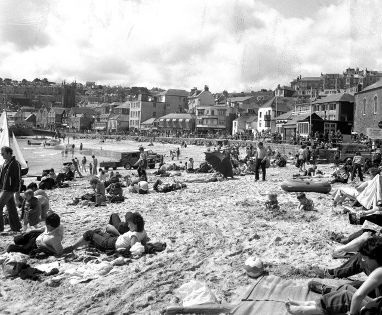
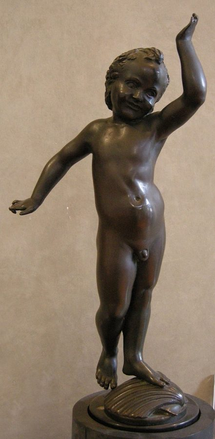
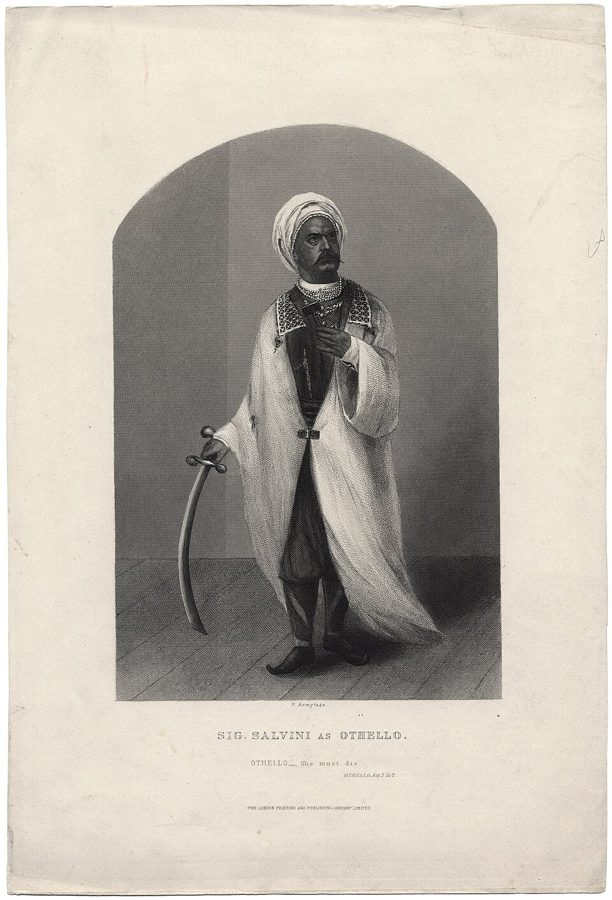

the custard pie
… the insult is the verbal equivalent of the custard pie …
译本：「相当于语言上的奶油蛋糕」
骂人就是嘴上的奶油派
custard 是英国人爱吃的蛋奶糊，custard pie 是默片里拿来砸脸的那种派（见上面「奶油派砸脸」）。中文「奶油蛋糕」意思到了，只是少了闹剧的联想。
三节，从骂人一路讲到街上让路。§4 是一个怪游戏：先让学生匿名凑出两张骂人清单，再演一场买东西的戏，每句话挂一个骂人的词。§5 写给老师：两个学生起初演不了自己不习惯的那一头。§6 是这一篇最「玄」也最好玩的一节：作者说地位说到底是领地，拿长椅、海滩、风景和迎面走来的两个陌生人讲「空间」。读的时候抓两条线：为什么要先学会挨骂，作者说的「空间」到底指什么。

上一页讲地位在身体上怎么做：眼神、句首的「呃」、头不动，人各有偏好的那一头，最后是拆信那场「不设防」的戏。这一页往两头走：§4、§5 还在课堂上，讲学生怎样放下防备、去演不习惯的地位；§6 换个角度，从人和人的距离、身体占多少地方去看地位。下一页的主仆戏就建在 §6 上：主人和仆人都当所有空间属于主人。
§6 说空间像液体一样「流动」，这是作者给演员的感觉语言，他自己承认这类说法不很科学。节里还顺口给了几个进化解释（王座靠墙是树上生活的遗风，爱看风景是因为太挤），他用的是「可能」「大概」，书里没有证据，当俏皮话读。
被人骂了、被人挤了、被人挡了路，这为什么都算地位？
读的时候带着这几个问题。不用先找答案，读完回来对照「检查一下理解」。
§4 从一个比方出发（骂人是嘴上的奶油派），先说直接互骂为什么不行，然后是一段课堂实录：两张清单、一场被学生演砸的买卖、他一再催「买东西」把戏扳回来、句尾挂上骂人词、再改一条规则。结尾一口气给了三个变体。§5 很短，先对老师讲道理，再讲眼神上的毛病和两个学生的个案，读来像病例。§6 换了腔调：先是他头一回看排练时的感觉，接着引斯坦尼斯拉夫斯基和巴罗两段像神秘主义的话，他承认不科学，然后转入一连串能动手验证的观察，从一尺对站到街上让路，最后是四个课堂练习。§6 中间几处顺口的进化解释，证据最薄。
作者落在哪：学会挨骂、被压低也能乐在其中，地位练习就没那么可怕了；而地位说到底是领地：看人占多少地方、空间往哪边「流」、谁给谁让路，就看得出高低。证据多是他的课堂和他自己的感觉。
这一页是原书和译本「姿态」一篇的第 4 到第 6 节。粗体是本站给的节名，下面是译本的节号和小标题、这一节在译本电子书中开头的几个字（搜它就能跳过去），再下面是英文原文的开头。每节标了档：「先读」是这本书最精彩、不读就错过的，「有空」好看但跳过不丢线，「可跳过」是写给特定读者的。读完打个勾。
先把这一页用到、作者默认你懂的几个概念讲一遍。讲的是概念本身，作者拿它推出什么，读原书时自己看。地位、跷跷板在前面讲过。
演员行里有个老说法叫类型化选角（typecasting）：长了一张坏人脸的总演坏人，演过一回傻乎乎的配角，以后找上门的全是这种角色。作者说的 status specialist 是地位上的类型化：一个人只会演一头，要么只会演高，要么只会演低，换过去就浑身不对劲。上一页讲过，作者（说是「此刻」的看法）认为人各有偏好的地位，拿它当防御，久了就成了专演一头的人。
它和 02a 的地位专家（status expert）正好相反：地位专家能随时抬高、放低自己。这个词译本：「姿态专家」，两个词共用这四个字，读 §5 时记住，这一节说的是只会一头的人。
在这一页：§5 的标题就是它。这一节讲剧校和职业剧场怎样让演员专精过头，两个学生的个案都在拆这种专精。
日常说「空间」就是地方大小。社会科学里有一门专讲人和人距离的学问，美国人类学家 Edward T. Hall 1966 年在《隐藏的维度》里叫它 proxemics（空间关系学）：人身体周围有一圈看不见的个人空间，陌生人闯进来就不舒服。电梯里大家盯着楼层数字，地铁里先坐两头的位子，都是在守这一圈。
作者的 space 和它相近，但走得更远，是演员的用语：他说这一圈空间不是静的，会像液体、像气流一样往外「流」，往哪边流、流进谁那里，就是高低。这是作者的感觉语言，不是测得出来的东西；下图的箭头也只是示意。
在这一页：§6 全节都在用它：看排练的感觉、一尺对站、长椅、海滩、街上让路。下一页的主仆戏也从它出发。
人被吓一跳时会眨眼、耸肩、缩脖子、身子往前弓，这是来不及想的保护动作，护住的正是喉咙和肚子。作者管这个姿势叫 fear crouch，蜷缩式。反过来是把身体的各个面都敞开：头偏着露出脖子，肩膀往另一边转露出胸口，腰微微后仰、扭开，把肚子也亮出来。他说常见的小天使雕像就雕成这个样子，所以叫 cherub posture，天使式。
敞开身体等于说「我不怕你」，所以它既显得柔软、脆弱，又可以是一种有安全感的高。日常的例子：老板仰在椅背上、双手抱在脑后跟你说话；新人坐在会议桌角，肩膀收着，笔记本抱在胸前。

在这一页：§6 中段，作者拿这两个姿势分高低，接着讲科津采夫电影里的李尔怎样进场。
作者在课上用过、照着就能玩的；个别几张是本站照书里的段落改的，卡里写明了来历。几个人、怎么玩、看什么写在卡片上；「先猜」那一栏是书里的课堂上发生了什么，先自己猜，或者先玩一次，再点开。全书的游戏卡汇总在游戏汇总。
译本：「购物」
作者说很无聊。骂人本身没人爱看，就像奶油派，好看的是砸到人脸上。他改成被骂的人难以置信、愤愤地重复那个词，演员一下子投入，常常停都停不下来，原本身体发僵的人也放开了。在这之前还有一关：学生为了让戏「有趣」处处挡路，他得跟他们较劲，才让他们老老实实买卖。
作者的清单里有很粗的脏话，也有对同性恋的蔑称和专拿身体开刀的词，这是 1970 年代课堂的样子；今天玩，别放歧视性的词，也别放针对在场某人真实长相的词。作者自己也说，让人直接互骂太针对个人，所以才让小组写清单。和不熟的人别玩。
作者说，他们多半会很想换个姿势；硬撑着不动，就会开始感到爱或者恨，因为两人的「空间」流进了对方。为了躲开这种感觉，人会调整位置，直到各自的空间能比较顺畅地流出去，或者干脆往后退，让那股劲没那么强。
这个距离平时只留给很亲近的人，和不熟的人做会很不舒服，随时可以喊停。
作者说，上面那只手给出方向，这一点很明显，可全班还是很惊讶：差别看着微不足道，效果却相当强。他还说，端坐在对方「光束」里的人会显得地位低一些。
作者说常常能：全班会一致觉得像医院走廊、拥挤的街道或窄窄的人行道，虽然说不出为什么。判断靠的是两人第一次对视的距离，和错身之前把对方「关掉」的那一刻。他说演员和导演要是把社交距离弄错，观众在某个层面上会知道这戏不真。
作者说，剩下的人不得不改姿势：他原来的动作是配着同伴摆的，现在一个人了，就必须换个位置，表达自己和周围的人是什么关系。作者把这个留成家庭作业，还在括号里给「作业」加了个感叹号。
看的时候别盯得太明显，被人发现盯着看，对方会不舒服。
按在书里出现的顺序排，标题前是节号。只讲到读懂这一页需要的程度。
作者说的 custard pie 是默片时代闹剧的招牌桥段：一块奶油派拍到某人脸上，体面一下子全没了。Laurel 和 Hardy 1927 年的短片《世纪之战》（The Battle of the Century）里有一场满街飞派的混战，常被当作这个桥段的巅峰。作者在 §4 开头拿它打比方：骂人就是嘴上的奶油派，好看的不是扔，是砸中。下一段他还讲了年轻的 George Devine（1956 年起主持皇家宫廷剧院的英国舞台剧团，前一篇细讲过）因为观众笑他演的角色瘦而哭过一回。
Spotlight 是英国的演员名录，演员登上照片和资料，剧团和选角导演翻它找人，今天还在，早已搬到网上。作者说它以前的排法是：先是演高的（straight，演正派主角、本色出演的演员），后面是演低的（character actors，性格演员，演怪人、小人物），再后面是儿童，最后是狗。作者说这没听上去那么糟，但看得出演员行里专精过头了。
那个学生说自己住在工人阶级街区，不想显得 stuck-up（端着、摆架子），觉得在自己的街坊里就得演低。作者的回答是：不拿走他已有的本事，只再加几样；他说那个男生没意识到，在哪儿都能演高或演低。他挑的场景是向父亲坦白得了 VD（venereal disease，性病），就是要把学生的真情绪搅起来，作者说年轻男人在这件事上都有焦虑。

作者引的就是斯坦尼写萨尔维尼的一段：他走上前，像只做了一个手势，就把满场观众攥在手心里。作者拿它说明他说的那种用空间的方式。
马尔姆格伦说自己小时候就发现人不止到皮肤为止，是一个椭圆的「瑞士奶酪」；巴罗说人身上有一圈磁性的光环。作者自己承认这类说法像神秘主义，不科学，但他说能传达演员的一种感觉。
苏联导演 Grigori Kozintsev（1905–1973）拍过 1964 年的《哈姆雷特》和 1971 年的《李尔王》；书里只说「俄国的《哈姆雷特》电影」，多半指的就是前一部。《李尔王》由爱沙尼亚演员 Jüri Järvet（1919–1995）演李尔，用帕斯捷尔纳克的俄译本，肖斯塔科维奇配乐。作者两部都用上了：李尔在隆重的仪式里进场，却像在自己家一样去炉边烤手；哈姆雷特被一个仆人挡了一下路，一把把他撞倒。
读译本时值得翻一下原文的地方：双关、行话、口语，和译本传不出的语气。灰色斜体是原文里的一小段，在英文电子书里搜它就能找到；方框里是译本这一句的译法。译错的放在下一节「译本勘误」。
对着译本读这三节时，下面这些地方会把人读歪。方框里是译本的原句，在译本电子书里搜它就能找到；灰色斜体是英文原文那一处。只收意思错了、反了、漏了的，措辞上的出入不收。全书的勘误汇总在译本勘误。
… disconcerting to suddenly notice that he’s flat-footed …
译本：「如果你刚刚叫某人“香港脚”」
kipper feet 是英国人笑话扁平足的说法（kipper 是压扁了熏的鲱鱼），不是脚气。作者的意思：你刚骂完人家「扁平足」，才发现他真是扁平足，就尴尬了。读成脚气，下半句就接不上。
… if you can’t admit your disabilities …
译本：「如果你不能承认你的残疾」
这里的 disabilities 指扁平足、招风耳、太瘦、平胸这类短处，同一段末尾的同一个词就译成了「缺点」。读成「残疾」，会以为作者在讲残障演员。
… playing was referred to as thin …
译本：「被戏称为“秃子”时」
原文是台词里说他演的角色「瘦」，观众笑了，年轻的 Devine 哭了一回。作者举这件事，是说演员得能接受别人拿自己的身体开玩笑。没有「秃子」。
… very boringly, with both actors …
译本：「两位演员都在“否定”彼此的交流」
原文是 blocking：挡住对方递过来的东西，让事情办不下去（没别的颜色、那顶帽子是我的）。这正是下一篇「自发性」专门讲的 block，本站统一叫拒绝。看到「否定」，知道是同一个词。
… healing openness typical of therapy groups …
译本：「而那些典型的心理治疗小组就更不可能了」
原文：一般学校里，老师本来就被指望管住学生，治疗小组那种有疗愈作用的敞开心扉，在学校里根本做不到；不过清单删过、甚至用乱语，游戏照样有用。译本把前半窄成「禁止互相侮辱」，后半说反了。
… two groups who slowly approach each other …
译本：「这种侮辱游戏可以在两个慢热的团体间进行」
原文是两组人慢慢朝对方走过去，边走边骂整个对方，最后面对面尖叫。不是说这两组人性子慢热。
… however wining the student is consciously …
译本：「无论学生是否意识到」
wining 是原书电子版的错字，应为 willing。原文：学生意识上再愿意，潜意识里也可能有很强的抗拒。译本说成不管意没意识到都有抗拒，丢了「再愿意」和「可能」，像是人人都抗拒。
a status he feels to be alien
译本：「与自身完全不同的角色」
原文是「他觉得陌生的那种地位」：一个习惯演低的学生头一回演高演成了，要马上夸他、赞赏他。说的是地位的高低，不是换了个人物。
… into high-status and low-status specialists …
译本：「演员大致分为高姿态专家和低姿态专家」
本节标题的 status specialist 是只会演高或只会演低的人。02a 第三位老师那种能高能低的 status expert 也是这四个字，意思正好相反。读本节的「姿态专家」，想成「专演高的」「专演低的」。这一条只报这一次。
… tell his father he had VD …
译本：「他要告诉父亲他患了阿尔兹海默症」
VD 是 venereal disease 的缩写。作者挑这个场景，是因为年轻男人在这件事上都有焦虑，能把学生的真情绪搅起来，紧接着那句「那个方面」说的就是性病。下一段的台词也一样。
he no longer needs to make them
译本：「这样就再也不需要刻意去表现这种感觉」
them 指头部的小动作。作者说：别硬压着不让头动，但每次动都要察觉到，再让自己觉得足够有支配感，直到用不着那些小动作。译本说成不必「刻意表现这种感觉」，偏了。
from about an inch away
译本：「准尉副官会站在新兵面前30厘米开外」
原文是一英寸，两三厘米：军士长（sergeant-major）让新兵立正，鼻子几乎贴着他的脸吼，不许他把自己的空间关掉。三十厘米开外就没有这股逼人的劲了。
compared to, say, boiling someone in oil
译本：「它的象征非常强大，堪比下油锅」
原文是对比：钉十字架逼着受刑的人敞开身体、关不掉自己的空间，所以作为象征，比起下油锅之类要有力得多。「堪比」成了两者差不多。
Someone who is sitting neutrally in the
译本：「坐在“边沿”上的人会显得姿态很低」
beam 是光束：前面说那人的空间往右涌出去，端端正正坐在这道「光束」里的人就显得低一些。不是坐在长椅边上。原文也只说「低一些」（lower-status），没说「很低」。
… I usually see cherubs carved in …
译本：「这是我经常看到的天使式姿势」
原文是「我常看到小天使就被雕成这个姿势」，名字就是从教堂、宫殿里那些胖乎乎的小天使雕像来的。译本读不出名字的来历，像是作者常看到有人摆这个姿势。
… the pelvis is in opposition to …
译本：「让骨盆前送至肩膀正下方」
原文：脊柱微微后仰并扭转，让骨盆和肩膀朝相反的方向转开，把肚子也亮出来。不是把骨盆送到肩膀正下方。照译本摆，摆不出那种扭开、敞开的样子。
out of the space of the car
译本：「某一个瞬间你会感觉“飞到了三界之外”」
原文：车停在荒野中间，人下车往外走，有一刻会觉得离开了车那一圈地盘；下一句就说人总喜欢待在东西旁边。不是什么超脱尘世。
incidents are likely to stick in
译本：「而这样的事情很可能只会在脑海中发生」
stick in the mind 是「印在脑子里忘不掉」。作者紧接着就讲自己在商店门口被人拎着胳膊挪开、至今窝火。译本读来像这种事是想象出来的。
… Most people find this approach very convincing …
译本：「大多数学生认为这种方法很有说服力」
people 指被搭话的路人：大多数路人真信了，以为碰上了熟人，有时还会演出很有意思的场面。不是学生觉得这个方法好。
on the opposite sides of each
译本：「连同椅子一起抬起来，面对面放着」
原文是把两人连椅子抬起来对调位置，左边的放到右边。原来看着很「自然」的一套姿势，换了方向就显得古怪，大家这才看出两人的动作是互相配好的。
… how everyone’s attitude changes when someone …
译本：「注意每个人的态度是如何变化的」
attitude 在这里是老派的「身体姿态」（画家、舞者说的那种），下一句说的正是剩下的人怎么改变体态。读成「态度」，会以为作业是看人的心情。
What we really want to see is someone being insulted. The interest we have in custard pies is in seeing them hit people.— §4。本站译：我们真正想看的是有人挨骂。我们对奶油派的兴趣，在于看它砸到人身上。
这是整个骂人游戏的转折，口气像在揭穿一个大家都没想到的常识。关键是 being insulted（被骂）和 hit（砸中）：看点不在出手的人，在挨打的人。所以规则改成让挨骂的人「接住」并重复那个词。别把这句读成作者鼓励骂人，他前面刚说过骂人本身很无聊。
I think it’s because we’re all giving status signals, and exchanging subliminal status challenges all the time.— §6。本站译：我想，这是因为我们所有人都在不停地发出地位信号，交换着意识不到的地位挑战。
前面一句是：从高处看熙熙攘攘的人群，他们居然很少撞上。这里的 I think 很要紧：这是作者的推想，不是观察结果，原文还把 all 标了斜体，口气很满。它代表了 §6 的读法：观察可以信，解释要掂一掂。
读完这一页的三节再看。下面是作者在这三节里的主张，由本站按主张重新组织，不按原书的顺序；每条后面是节号，拿不准就回书里那一节再读一遍。
作者说，一旦能接受被骂，人会很高兴，最死板、最戒备的人也会松开。演员还得能接受别人拿自己的身体短处开玩笑，否则永远不会觉得「安全」。按他的经验，骂人游戏让地位跌得很狠又很好玩，玩过之后，普通的地位戏就没那么可怕了。
§4直接让学生互骂太针对个人，他就让两组匿名写清单，挑哪个词不由骂的人负责。光在句尾挂骂人词也无聊；被骂的人难以置信地重复那个词，演员才投入。骂只是装饰，戏里要有要办的事；在这之前，他先得让学生别为了「有趣」挡住买卖。
§4学生意识上再愿意，潜意识也可能抗拒，所以先要让他安全、信任你，像两人一起去改一个「第三者」的毛病，演成了马上夸。他认为差的剧校按类型派角色，职业剧场也大致把演员分成演高、演低两拨，专精过了头。调眼神时学生会说「感觉不对」，他说这种不对劲正是要学会的对的感觉。
§5他看排练时觉得空间像液体在演员之间流；引了巴罗的「磁性光环」后，他承认这类话不很科学，但说它能传达演员的一种感觉。照这个说法，高地位的人让空间流进别人，低地位的人把它关掉，跪和鞠躬是仪式化的关掉。身体每个动作都改变空间的流向；高地位的人常摆各种天使式，低地位的人一被挑战就有往蜷缩式滑的倾向。
§6海滩上后来的人会离远了圈地，人越多，每人要的空间越小。他认为街上两个陌生人老远就打量对方的地位，低的先让；两人都自认更高，就会面对面「侧身跳舞」。他觉得人群很少相撞，是因为大家一直在交换地位信号。所以演员把社交距离弄错，观众在某个层面上会觉得假。
§6合起来：地位不只在话里，也在身体占多少地方、往哪边敞开、给谁让路。能接受被骂、被压低，这些练起来就容易得多；老师要做的，是让学生安全，陪他把「不对劲」练成新本事。
这本书 1979 年出版。下面挑出这一页里能被后来的研究检验的说法，分「书里 / 当时 / 今天」三栏，并给一个结论。结论判的是标题里「书里的说法：」后面那一句。全书的这一节汇总在今天怎么看。
读完作者的主张，再看它站不站得住。每一块摆出三样：主流怎么看，作者怎么看，本站的评论。最后一句是本站对这一页的总体判断。
主流看法：心理学把逗弄、互损看成一把两刃刀。Keltner 等 2001 年在《心理学公报》的综述，把逗弄描述成一种带着「我是在玩」记号的挑衅，也讨论了它的两面：能拉近关系，也能伤人，要看记号清不清楚、双方是什么关系。
作者的看法：能接受被骂，人就松开了；直接互骂太针对个人，所以让小组写清单，让被骂的人去「接住」骂，骂只当装饰。§4
本站的评论：作者的设计其实很细：清单匿名、由半个班认可，骂挂在一场买卖上，看点放在挨骂的那一下。这些正好是把挑衅变成游戏的记号，他比后来的研究早想到了。今天照着玩，要改的是那张清单：书里有对同性恋的蔑称和专挑身体缺陷的词，在 1970 年代的课堂是常态，今天会真伤到人。换成荒唐的骂法，或干脆用乱语，作者自己也说一样有用。
主流看法：人和人的距离、身体的舒展和收缩，研究得很多。Hall、Coats 和 LeBeau 2005 年在《心理学公报》的元分析汇总了大量研究，发现人们「以为」的地位和非语言行为（距离、姿势、眼神等）之间的联系，比实际测到的强得多、也普遍得多，不过两者的方向大体一致。
作者的看法：地位说到底是领地，空间像液体一样流，高地位的人让空间流进别人；他自己说这不很科学，像魔法语言，但能传达演员的感觉。§6
本站的评论：这个发现对作者其实是好消息。舞台上要紧的是观众怎么看，而人们普遍相信、也照着去判断这些身体信号，哪怕现实里的对应没那么强。所以「空间流动」当演员的感觉语言很管用，让演员和观众戴同一副眼镜。拿它去读真实生活就要小心：一个人仰在椅背上跷着腿，可能只是累了。
主流看法：讲人偏爱什么样的位置，常被引的是英国地理学家 Jay Appleton 1975 年的「瞭望—庇护」说（prospect-refuge）：人天生喜欢既能看出去、背后又有依靠的地方。它影响很大，支持它的多是看图打分一类的偏好研究。
作者的看法：沙发转角是高地位的位置；王座靠墙、上有华盖，可能是遇险时要爬树的遗俗；去海边、爱看山，大概是过度拥挤的症状。§6
本站的评论：观察本身是好的，谁都见过人先占角落、背靠墙坐。解释是另一回事：作者用了「可能」「大概」，书里没给任何证据。「当年在树上，所以今天……」这类故事很容易编，也很难检验。读的时候享受观察，把解释当作者的俏皮话。
本站的总体看法：这一页值得带走两样：一个真能玩的骂人游戏（换掉那张清单），一副看身体和距离的眼镜：谁占角落、谁往边上让、剩下的人怎么换坐姿。「空间流动」这类魔法语言作者自己就承认不很科学，进化故事更是随口一说；他的长处在观察，不在解释。
先在心里答，再点开。答错的那题，回书里把对应那一节再读一遍。
他们为了让戏「有趣」处处挡住这场买卖，结果反而无聊。作者要他们只管买、只管卖。这就是下一篇讲的拒绝（block）。
被骂的人要难以置信、愤愤地把那个词重复一遍。他说我们想看的不是骂人，是有人挨骂，就像奶油派要砸到人才好看。
太针对个人：你刚骂完人家扁平足，才发现他真是扁平足。所以他让两组匿名写清单，挑哪个词的责任不落在骂人的人身上。
先说只是给他加几样本事，不拿走原来的；再给他一个刺激的场景和定好的动作：走到窗边、转身、看着父亲、头不动。作者说小动作不必硬压，但动的时候要察觉到。重演时，先移开目光、垮下来的是父亲。
按作者的说法，那人的空间往右涌出去，端坐在这道「光束」里的人会显得地位低一些。
两人都认为自己地位更高、都不肯先让的时候。迎面来的要是一位半瞎的老太太，你会直接让开，不会跳。
用一句话说这一页：
想一想：你在公司、食堂或家里最常坐的是哪个位置？下次开会，留意谁坐在角落、谁背靠着墙、谁坐在别人的「光束」里。再想想你自己为什么总坐在那儿。
读过又忘了，从这里想起来。挑的是这一页最值得记住的故事、游戏和说法，不按原书顺序；每条后面是节号，想细看就回书里那一节。全书各页的这一节都收在全书回顾。
一句话：地位说到底是领地：看一个人占多少地方、往哪边敞开、给谁让路，就看得出高低；而学会了挨骂，练这些就容易多了。
光在台词里骂人很无聊；被骂的人难以置信地重复那个词，戏一下子活了。作者说我们爱看的不是骂，是挨骂。
§4两组各写一张清单，骂人的人不用为挑了哪个词负责，每个词都先经过了半个班的认可。
§4只肯演低的男生照着「走到窗边、转身、看着父亲、头不动」重演那场坦白戏，先垮下来的是父亲。
§5只换一下哪只手腕搭在上面，空间就换了方向。全班都惊讶：差别这么小，效果这么明显。
§6空海滩上，第二家人会离第一家远远的，甚至换一片海滩；人越来越多就能挨着坐，挤满了，大家只好望天或拿报纸遮脸。
§6两个都自认更高的人面对面左躲右闪，嘴里咕哝着道歉。作者在商店门口被人拎着胳膊挪开过，说至今窝火。
§6